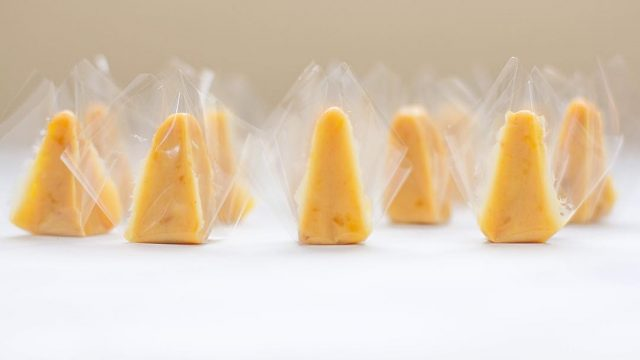

Source:https://www.lutongpinoyrecipe.com/desserts/yema/
This confection is made out of egg yolks, milk, and sugar. Yema is a sweet custard confectionery from the Philippines. It is believed that yema originated from Spaniards. During the Spanish colonization of the Philippines, egg whites mixed with quicklime and eggshells were used as a type of mortar to hold stone walls together. Filipinos reused the discarded egg yolks into various dishes. Among them is yema, which is possibly based on the Spanish pastry Yemas de Santa Teresa. Yema could be converted to candies, these candies are popular to kids since they are creamy and sweet for a cheap price. They can also be then shaped into small balls or pyramids and covered in white sugar.

Owned by UMAK and multiple individuals, please do not steal or share this website